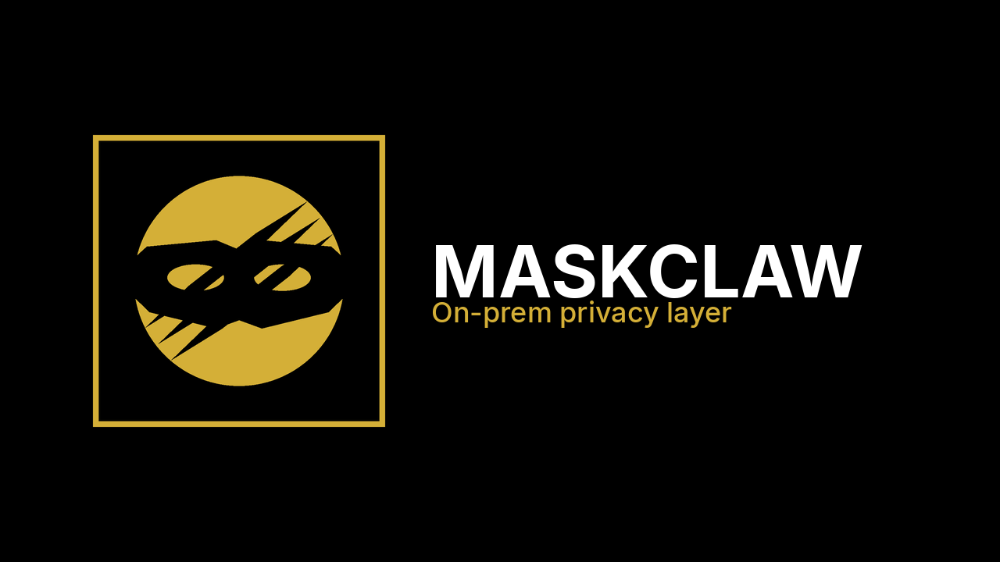

On-prem privacy layer

On-prem privacy layer
On-prem privacy proxy for OpenAI-compatible LLM clients. Prompts hit MaskClaw first. Secrets and PII become stable placeholders, the redacted request is routed (local or cloud), then originals are restored on the way back.
Source: github.com/budezllc/maskclaw